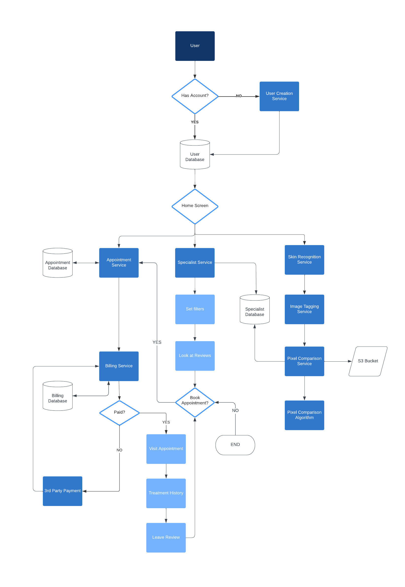
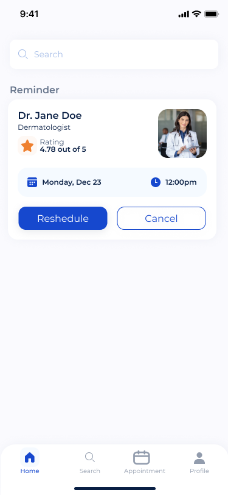
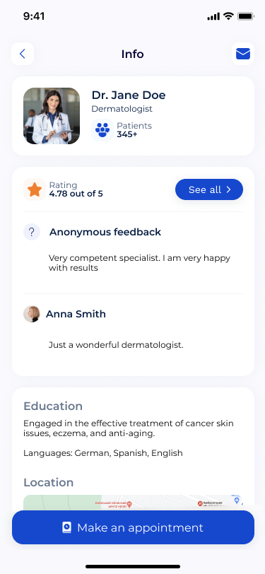
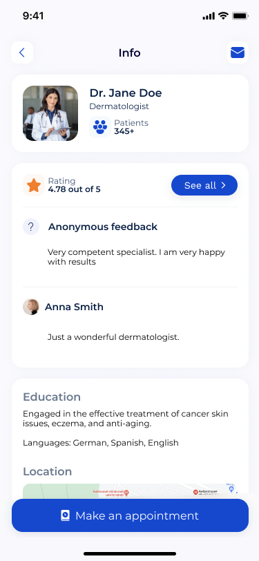

Overview
When we have skin issues we don’t know who to go to and we have the misconception it is always expensive and only certain income levels can have their needs met. I want to make it an equanimous platform by offering affordable healthcare. Our Target Customer: Patients who care about their skin Problem: Expensive and lack of transparency Solution: A platform where there is information about price, past patient reviews, information on what was treated, and billing done all in app.
Personas
- Skin issues
- Skin maintenance
- Anti-aging concerns
- Medical Professionals
- Government/HIPAA
- Supply/Manufacturer
- Insurance Company
Pain points
- Expensive
- Lack of transparency
- Overwhelming information
- Marketing - finding patients
- Inflexibility
- Different systems for scheduling and billing. The fee is high for the current solution
Research
- Demographic background
- Skin Issues and Skincare Routine
- Top pain points
- Potential solutions to their problems
- How they would use the platform
Persona #1
Profile: I am a busy professional and mom, I don’t have time to do research, but I still care about
my appearance and want to keep my skin looking young. I want to only do things that are
safe.
Goals: Slow down aging skin
Frustrations: It’s expensive, no time to research, anxious about anyone touching my skin
How Persona Discovers Product: Through friends and Instagram
How I expect to use the service: I can search what doctors are nearby within my timeframe, has high
reviews, and within my budget. Book appointment and pay on the application. My history will be saved
and my data is safe.
Persona #2
Profile: I work across many clinics and have my own business which I need to continually support
since I have 10 full-time employees on payroll. I also have 1 child and I am currently expecting a
2nd. I still have student loans I need to pay off.
Goals: Having a flexible schedule and be able to make extra income
Frustrations: It’s hard for me to find a flexible schedule and finding patients
How Persona Discovers Product: Through colleagues and online advertisements
How I expect to use the service: I can put what hours I’m available at what clinic. I can confirm
bookings and also provide information of what treatment I provided. I expect easy to use since I’m
not tech-savvy.
Patient Journey

User Stories & Acceptance Criteria
| User Story | Acceptance Criteria |
|---|---|
I want to filter on providers based on specialty, price, and location. I want to find out the treatment cost and if possible with insurance coverage information so that I know exactly how much I will pay out of pocket. I want to know if the provider has specific experience with my skin issues so that I can make better decision on choosing an experienced provider. I want to book and cancel appointments easily so that I can be flexible with my schedule. I want to pay my provider on the app so that I can manage the payment easily. I don’t want to fill out the same medical history paperwork each time I want to see a new specialist. I want to update my calendar and open to public so that potential clients can check my availability and book appointments with me. I want to get my information updated on my profile so that I can attract more customers. I want to have a place to document treatment notes. I want to make sure there are no last minute cancellations or no shows I want to bill my clients from the app so that I can manage the payment and invoices easily. |
The platform should enable a filtering system that allows patients to filter on providers based on the provider’s profile. The platform should display the treatment cost on provider’s profile with insurance coverage information and payment options. The platform should display the specialist’s education, specialty, and reviews. The platform enables patients to book appointments within 4 clicks, also modify appointments 48 hours prior to the scheduled meeting. The platform enables patients to add their credit/debit card or link their apple pay/paypal to their account. They can set up autopay function or 1 click to pay. The payment process should take less than 15s. Fill out form once and will be shared with new booked provider within 5s of booking The platform should enable providers to update calendar or sync their google/outlook calendar in 4 clicks. The platform should request providers to provide all required personal information The platform should enable a client management portal with treatment history. They system will send a notification for the patient to confirm appointment at least 48 hours before otherwise it will charge the patient a last minute change fee. The platform should automatically generate the bill and invoice and send to the patient within 24 hours before the session. |
Product Roadmap

Risk and Mitigation
Schedule Risk: There might be conflict when scheduling/allocating critical engineering resources, leading to product launch delays. Mitigation: The team will need to follow the Agile principle and give onboarding training on Agile expectations.
Business Risk: There might be fewer patient requests than the team expected. Mitigation: Use a landing page and “The Mechanical Turk” to start the business before investing too much in technology.
Operational Risk: The un-uniform customer volume may cause too much waste for some seasons or days. Mitigation: Start the business with the smallest size to experience the market. Increase/reduce operation team size using forecasting data.
Market Risk STO (is a new concept to most investors, it hasn’t been around long enough to prove its value in the market yet Create/publish blogs on company website and co-create content with industry influencers
Technology Risk: The infrastructure of the app might require too much overhead. Mitigation: The design should start with cloud deployment before owning any infrastructure.
Legal Risk: The privacy concern may pose the team a legal risk. Mitigation: The company will partner with government. All privacy rules will need an external legal team review.
Business Model Canvas

Architecture Design

System Design
Prototype


 
